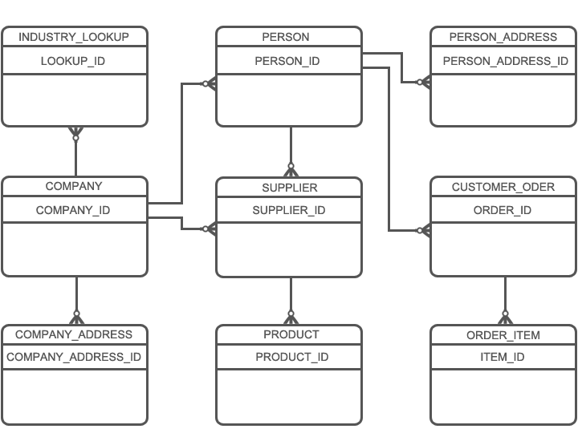

A2ZDB Object Modeling Principles
The A2Z object model is first and foremost designed for an enterprise perspective that can be described as a holistic top-down logical model commonly refered to as Entity Attribute Value or EAV model. What this means is the model is created with a different, perhaps more abstract approach than one would likely encounter with a traditional View Integration Model. As a result, it allows you to sustain and build upon your domain taxonomy from a holistic perspective that will provide maximum scalability and effeciency into your problem domain through natural software accreation and data federation.
The benefit of using this top-down approach is how well the model itself flexes toward your domain of interest without the need for refactoring callstacks into data storage mediums because a column, table, property or new document was added or changed. We have all experienced this problem one time or another. The reason this benefit can be realized is because the physical objects and attributes that transport the data do not describe the data the same way one might find in traditional View Integration Models.
The following example illustrates this EAV principle at it's core.
Top-Down Logical Model
 Figure 1.1 IDEF ER Diagram
Figure 1.1 IDEF ER Diagram
EAV: Father of All Object Models
- Everything is an "ENTITY"
- All "ENTITY" data has an "ENTITY_TYPE"
- An "ENTITY" can have a "RELATIONSHIP" with another "ENTITY"
- All "RELATIONSHIPS" have a "RELATIONSHIP_TYPE"
- An "ENTITY" can have one or more "ATTRIBUTES"
- An "ATTRIBUTE" has an "ATTRIBUTE_TYPE"
- An "ATTRIBUTE" can have one or more "ATTRIBUTE_VALUES"
The above logical model representation is analogous to space-efficient methods of storing a sparse matrix, where only non-empty values are stored. In an EAV data model, each attribute-value pair is a fact describing an object referred to as an "ENTITY" in the above diagram, and a row in an EAV entity stores a single fact. The benifit of this model is this technique makes it easy to store any sparse matrix or composite object to the model maximizing code reuse. Another benift this technique provides is the ability to identify trending data sets.
Conversely, this strategy requires you to manage relationships via standardized taxonomy and metadata repositories in-lieu of traditional relational constraints as is the case in a bottom-up model. Lastly, this top-down EAV modeling strategy does have a tendency to inherit an abstract nature to the naming convention and normalization techniques. This, combined with logical relational forms will require developers who are not familiar with these patterns and techniques to make the appropriate mental adjustments in how they interact with A2Z's object persistence. In my experiencee, ramp up time usually requires about two weeks working with the model for entry level software developer's who have some experience with data transactions in the web tier.
Characteristics of a View Integration Model
A2ZDB is different than a traditional "View Integration Model" or bottom-up relational model in a variety of ways. Most notable is the difference in how entities and attributes are described in relation to other entities as well as the data these entities contain.
Bottom-Up Object Model
 Figure 1.2 IDEF ER DiagramView Integration Model
- Traditionally, the model's Tables and Columns describe themselves
- This same pattern exists with dimensional documents and properties. At this stage, technology and storage platform is irrelavant.
- View models are traditionally highly constrained in favor of project requirements and application features. As a result, it can be a real challenge trying to maintain parity with an enterprise vision.
- View models are susceptible to disparity due to re-engineering efforts and personnel change-over.
- Change management can have a cascading effect on API call stacks as well as user interface & experience. This is commonly seen when the effort to integrate a feature is greater than the feature being integrated.
- DevOps sustainability can be greatly impacted over a life of your data's storage architecture if proper planning is not applied to how you store and access your second most valuble asset. People being the first.
Consolidated EAV View Integration Model.
In looking at the two model's illustrated above. Theoretically, One could store the information from the View Integration Model into the top-down EAV model but the process would require an abstract layer of recursion. This is not the sweet spot you want to perform development operations. Obviously this would not only require a lot development cycles, but would be complicated to change. Accordingly, a great deal of effort has gone into striving to find that balance between an EAV semantic model and a view integration model for maximum sustainablity, usability, scalability and performance. This unification between the traditional view model and and holistic enterprise model is what A2ZDB strives to meet through what I refered to as a consolidated EAV view integration model. You will learn more about these concrete models when you review the Core Object Models. Colloquially, this model can loosley be described an object oriented data model in relational form.
Before continuing any further, It is important to point out a few basic premises regarding object modeling.
- There is no wrong way to model and right way to model per se. If your model returns accurate information, you did it right. If your model returns in-accurate information, this would suggest something was missed and could be very costly in the business decision making processes.
- Varying degrees of EAV modeling does occur in view integration models and these efforts increase the sustainability of project's life span
- Over time, if not properly planned, manged and maintained. A bottom up model can contain a variety of constraints, columns and relationships that get lost in translation as people and process are updated and replaced. These properties are usually ignored by developers for fear of regression.
- Finally, the View Integration Model can be difficult to abondoned due to cultural conditioning, training and past project experiences. In fact, It can be so difficult, that the A2Z modeling principles do not completely abondon the concept.
Sparse Matrix
A2ZDB makes maximum use of spatial effeciency and performance when designing a taxonomy schema. Great care is given toward properly identifying the nature of not just the data being stored, but also the relationships within a domain of discourse and how it relates to accompanying taxonomys that have simalar attributes and relational characteristics. The differences between these two methods of modeling is a red pill/blue pill argument. If you are new to modeling or perhaps you are a veteran developer considering new ways to isolate, partition and manage your enterprise data. The A2ZDB will provide you a tremendous springboard toward accomplishing these efforts.
Schools of Thought
The are two major schools of thought when it comes to the strategies DevOps teams apply to data. Likewise, there are a lot of sub-schools of thought on both sides of the isle. In data architecture parlence, on the one hand there is a camp that believes the object model is king of the hill. How data is actually stored and organized in the database is not a super high priority. Depending on the degree this architecture is implemeted, it has been my experience with this pattern, the relational database is treated like someone might manage there own file system. Heavy drill down dependency is placed on traditional object relational mapping techniques like Entity Framework, JDO or Hibernate API protocols to drill through the aggregate.
Object Model is King?
In truth, there is actually something to be said with this argument. So much so - many DevOps teams have completely moved off this relational database paradigm all together and is now storing serialized composite objects in a document database. This architecture offers tremendous return on data portability and scalability and completely removes the ORM problem domain altogether. Out of sight, out of mind. But what about all the advantages the very powerfull relational database has to offer?
Relational Data Model Is King?
In the other camp, the object model is not king of the hill. The object model is simply a way to reflect data in a proper context and should not be soley constrained or driven through non-technical market intrest. While this is certainly a valid argument, it does not address why the relational model is king of the hill. The relational database is a very powerful tool when properly used. The reason this camp even exists is because it has tenure. Just because data architecture is trending in other directions, does not mean the relational database platform is deprecated or somehow going away. Database document platform technologies have along way to go before they can fill the gaps relational models do much better than aggregate models.
Finding Balance
As a profesisonal data modelor, if I could offer you one piece of advice toward expanding your career path it would be this. Don't put a dog in this fight -- because you don't have to pick a side. Both platforms offer tremendous opportunity and scalabity. The are very powerful features both platforms have to offer. It is in this spirit A2ZDB's architecture encourages you to uses both when and where warranted.
History of this Model
Decades of effort has made this model quite complete in it's core form. More over, it is my experience once developers learn and undertsand this holistic approach, they prefer developing under EAV based Semantic models over "View Integration Models". The reason for this is because it is faster and easier to develop against and provides greater opportunities for code reuse.
In addition to the physical characteristics of the model's themselves, decades of effort has gone into defining a scalable metadata taxonomy that describes your valuable data assets. While this project is new, the defined and developed taxonomy is a mature, vast and growing business computing taxonomy infrastructure. This combined with managed metadata repository dependencies that allows the A2ZDB w/Arizona's architecture to stretch it's legs in both development and production environments.
What this ultimately means is, refactoring storage structure (adding a table or a new column) for your business data becomes a very rare event in feature driven development. Originally - the A2ZDB consisted of 23 EAV Tables, that was almost 20 years ago. Today, the core database and composite architecture requires less than 50 tables. Less than 100% growth in entities in 20 years says something toward the legitamcy of flexibility this model has to offer. I understand this history is important in your decision making process. For additional historical information Click here